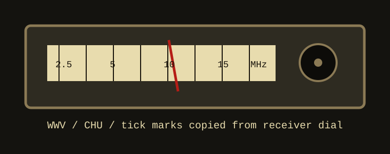

Before the digital clock earned trust, the observatory used a shortwave receiver and a cassette recorder. WWV at 10 MHz was strongest after midnight; CHU was penciled in as a backup when the furnace made the receiver grumble.
The card specifies: start tape, announce object, keep one ear on ticks, one eye on field. Nobody enjoyed this, which is why it worked.
| Station | Frequency | Use |
|---|---|---|
| WWV | 5 / 10 / 15 MHz | minute tone, occultation timing |
| CHU | 3330 / 7335 kHz | backup ticks in winter |